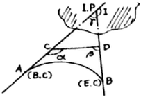
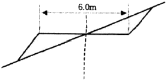
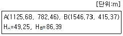
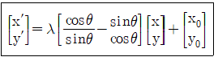
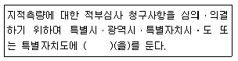
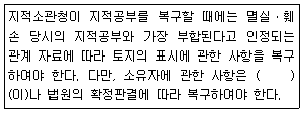

지적기사 (2016-08-21 기출문제)
1과목: 지적측량
1. 필지를 분할하는 경우 분할 후의 면적이 분할 전 면적의 80퍼센트 이상이 되는 필지의 면적을 측정할 때에는 분할 전 면적의 20퍼센트 미만이 되는 필지의 면적을 먼저 측정한 후, 분할 전 면적에서 그 측정된 면적을 빼는 방법으로 할 수 있다. 이러한 방법으로 필지를 분할할 수 있는 기준 면적은 얼마 이상인가?
- 4000m2
- 5000m2
- 6000m2
- 7000m2
(정답률: 61%)

2. 경위의측량방법에 따른 세부측량을 실시하는 경우 축척변경시행지역에 대한 측량결과도의 기본적인 축척은?
- 1/500
- 1/1000
- 1/1200
- 1/6000
(정답률: 70%)
3. 다음 중 경계의 제도 기준에 대한 설명으로 옳은 것은?
- 경계는 0.1mm 폭의 선으로 제도한다.
- 1필지의 경계가 도곽선에 걸쳐 등록되어 있는 경우에는 도곽선 밖의 여백에 경계를 제도할 수 없다.
- 경계점좌표등록부 등록지역의 도면에 등록할 경계점간 거리는 붉은색, 1.5mm 크기의 아라비아 숫자로 제도한다.
- 지적기준점 등이 매설된 토지를 분할하는 경우 그 토지가 작아서 제도하기가 곤란한 때에는 그 도면의 여백에 그 축척의 15배로 확대하여 제도할 수 있다.
(정답률: 68%)
4. 배각법에 의하여 지적도근점측량을 시행할 경우 촉각오차 계산식으로 옳은 것은? (단, e는 각오차, T1은 출발기지방위각, ∑α는 관측각의 합, n은 폐색변을 포함한 변수, T2는 도착기지방위각)
- e=T1+∑α-1800(n-1)+T2
- e=T1+∑α-1800(n-1)-T2
- e=T1-∑α-1800(n-1)+T2
- e=T1-∑α-1800(n-1)-T2
(정답률: 65%)
5. 고저차가 1.9m인 기선의 관측거리가 248.48m일 때 경사에 대한 보정량은?
- -8mm
- -7mm
- +7mm
- +8mm
(정답률: 53%)
6. 지적삼각점측량에서 A점의 종선좌표가 1000m, 횡선좌표가 2000m, AB간의 평면거리가 3210.987m, AB간의 방위각이 333°33‘ 33.3“일 때의 B점의 횡선좌표는?
- 496.789m
- 570.237m
- 798.466m
- 1322.123m
(정답률: 54%)
7. 고초원점의 평면직각종횡선수치는 얼마인가?
- X=0m, Y=0m
- X=10000m, Y=30000m
- X=500000m, Y=200000m
- X=550000m, Y=200000m
(정답률: 76%)
8. 면적을 측정하는 경우 도곽선의 길이에 최소 얼마 이상의 신축이 있는 때에 이를 보정하여야 하는가?
- 0.2mm
- 0.3mm
- 0.5mm
- 0.7mm
(정답률: 62%)
9. 지적측량기준점표지의 설치기준에 대한 설명으로 옳은 것은?
- 지적도근점표지의 점간거리는 평균 300m이상 600m이하로 한다.
- 지적도근점표지의 점간거리는 평균 5km이상 10km이하로 한다.
- 다각망도선법에 의한 지적삼각보조점표지의 점간거리는 평균 2km이상 5km 이하로 한다.
- 다각망도선법에 의한 지적도근점표지의 점간거리는 평균 500m 이하로 한다.
(정답률: 72%)
10. 지적삼각점측량에서 수평각의 측각공차에 대한 기준으로 옳은 것은?
- 기지각과의 차는 ±40초 이상
- 삼각형 내각관측치의 합과 180도와의 차는 ±40초 이내
- 1측회의 폐색차는 ±30초 이상
- 1방향각은 30초 이내
(정답률: 44%)
11. 지적도근점측량에 따라 계산된 연결오차가 허용범위 이내인 경우 그 오차의 배분방법이 옳은 것은?
- 배각법에 따르는 경우 각 측선장에 비례하여 배분한다.
- 배각법에 따르는 경우 각 측선장에 반비례하여 배분한다.
- 배각법에 따르는 경우 각 측선의 종선차 또는 횡선차 길이에 비례하여 배분한다.
- 반위각법에 따르는 경우 각 측선의 종선차 또는 횡선차 길이에 반비례하여 배분한다.
(정답률: 54%)
12. 1/50000 지형도상에서 36cm2 인 토지를 경지정리하고자 할 때 지상에서의 실제면적은?
- 90ha
- 900ha
- 1200ha
- 2000ha
(정답률: 67%)
13. 다음 중 착오(과대오차)에 해당하는 것은?
- 토탈스테이션의 수평축이 수직축과 직각을 이루지 않아 발생한 오차
- 토탈스테이션의 망원경 축과 수준기포관 축이 평행하지 않아 발생한 오차
- 토탈스테이션으로 측정한 거리 169.56m를 196.56m로 잘못 읽어 발생한 오차
- 토탈스테이션의 조정불량 및 측량사의 습관에 의하여 발생한 오차
(정답률: 72%)
14. 평판측량방법에 따른 세부측량의 기준 및 방법에 대한 설명 중 옳은 것은?
- 지적도를 갖춰 두는 지역에서의 거리측정단위는 5cm로 한다.
- 임야도를 갖춰 두는 지역에서의 거리측정단위는 50cm로 한다.
- 측량결과도는 축척 500분의 1로 작성한다.
- 기지점이 부족한 경우에는 측량상 필요한 위치에 보조점을 설치하여 활용한다.
(정답률: 46%)
15. 축척 1/1200 지역에서 도곽선의 신축량이 +2.0mm일 때 도곽의 신축에 따른 면적보정계수는?
- 0.99328
- 0.99224
- 0.98929
- 0.98844
(정답률: 55%)
16. 지적측량 중 지적기준점을 정하기 위한 기초측량을 3가지로 분류할 때 그 분류로 옳지 않은 것은?
- 지적삼각점측량
- 지적삼각보조점측량
- 지적도근점측량
- 지적사진측량
(정답률: 82%)
17. 지적삼각보조점의 수평각을 관측하는 방법에 대한 기준으로 옳은 것은?
- 도선법에 따른다.
- 2대회의 방향관측법에 따른다.
- 3대회의 방향관측법에 따른다.
- 관측 지역에 따라 방위각법과 배각법을 혼용한다.
(정답률: 57%)
18. 지적삼각점의 관측에 있어 광파측거기는 표준편차가 얼마 인상인 정밀측거기를 사용하여야 하는가?
- ±(5mm+5ppm)
- ±(5cm+5ppm)
- ±(0.⑤mm+5ppm)
- ±(0.⑤cm+5ppm)
(정답률: 70%)
19. 평판측량방법에 따른 세부측량을 교회법으로 할 때 방향각의 교각은?
- 30°이상 150°이하로 한다.
- 20°이상 130°이하로 한다.
- 30°이상 120°이하로 한다.
- 50°이상 130°이하로 한다.
(정답률: 71%)
20. 지적삼각보조점측량의 방법에 대한 설명으로 옳지 않은 것은?
- 교회법으로 시행한다.
- 망평균계산법으로 시행한다.
- 전파기측량으로 시행한다.
- 광파기측량으로 시행한다.
(정답률: 63%)
2과목: 응용측량
21. 그림과 같이 원곡선(AB)을 설치하려고 하는데 그 교점(I.P)에 갈 수 없어 ∠ACD=150°, ∠CDB=90°, CD=100m을 관측하였다. C점에서 곡선시점(B.C)까지의 거리는?(단, 곡선반지름 R=150m)

- 155.47m
- 125.25m
- 144.34m
- 259.81m
(정답률: 48%)
22. 사진의 크기 18cm×18cm, 초점거리 180mm의 카메라로 지면으로부터 비고가 100m인 구릉지에서 촬영한 연직사진의 축척이 1:40000이었다면 이 사진의 비고에 의한 최대 변위량은?
- ±18mm
- ±9mm
- ±1.8mm
- ±0.9mm
(정답률: 64%)
23. 항공삼각측량의 광속조정법(Bundle Adjustment)에서 사용하는 입력좌표는?
- 사진좌표
- 모델좌표
- 스트립좌표
- 가계좌표
(정답률: 56%)
24. 원곡선 설치를 위하여 교각(I)이 60°, 반지름이 200m, 중심말뚝 거리가 20m일 때 노선기점에서 교점까지의 추가거리가 630.29m라면 시단현의 편각은?
- 0°24‘31“
- 0°34‘31“
- 0°44‘31“
- 0°54‘31“
(정답률: 52%)
25. 완화곡선의 성질에 대한 설명으로 옳지 않은 것은?
- 완화곡선의 접선은 시점에서 직선에 접한다.
- 완화곡선의 접선은 종점에서 원호에 접한다.
- 완화곡선에 연한 곡선반지름의 감소율은 캔트의 증가율과 같다.
- 곡선반지름은 완화곡선의 시점에서 원곡선의 반지름과 같다.
(정답률: 67%)
26. 곡선의 종류 중 완화곡선이 아닌 것은?
- 복심곡선
- 3차 포물선
- 렘니스케이트
- 클로소이드
(정답률: 60%)
27. GNSS(global navigation satellite system)측량의 Cycle Slip에 대한 설명으로 옳지 않은 것은?
- GNSS 반송파 위상추적회로에서 반송파 위상차 값의 순간적인 차단으로 인한 오차이다.
- GNSS 안테나 주위의 지형ㆍ지물에 의한 신호단절 현상이다.
- 높은 위성 고도각에 의하여 발생하게 된다.
- 이동측량의 경우 정지측량의 경우보다 Cycle Slip의 다양한 원인이 존재한다.
(정답률: 55%)
28. 다음 그림과 같은 경사지에 촉 6.0m의 도로를 개설하고자 한다. 절토기울기 1:0.5, 절토높이 2.0m, 성토기울기 1:1, 성토높이 5m로 한다면 필요한 용지폭은?(단, 양쪽의 여유폭은 1m로 한다.)

- 17.0m
- 14.0m
- 12.5m
- 11.5m
(정답률: 44%)
29. 사진의 특수3점은 주점, 등각점, 연직점을 말하는데, 이 특수3점이 일치하는 사진은?
- 수평사진
- 저각도경사사진
- 고각도경사사진
- 엄밀수직사진
(정답률: 62%)
30. 수준측량의 야장기입법 중 중간점(I.P)이 많을 때 가장 적합한 방법은?
- 승강식
- 고차식
- 기고식
- 방사식
(정답률: 77%)
31. 우리나라 지형도 1:50000 에서 조곡선의 간격은?
- 1.5m
- 5m
- 10m
- 20m
(정답률: 55%)
32. 지형도에서 등고선에 둘러싸인 면적을 구하는 가장 적합한 것은?
- 전자면적측정기에 의한 방법
- 방안지에 의한 방법
- 좌표에 의한 방법
- 삼사법
(정답률: 52%)
33. 등고선의 성질에 대한 설명으로 틀린 것은?
- 등고선은 최대경사선과 직교한다.
- 동일 등고선 상에 있는 모든 점은 높이가 같다.
- 등고선은 절벽이나 동굴의 지형을 제외하고는 교차하지 않는다.
- 등고선은 폭포와 같이 도면 내외 어느 곳에서도 폐합되지 않는 경우가 있다.
(정답률: 62%)
34. 촬영고도 1500m에서 찍은 인접 사진에서 주점기선의 길이가 15cm이고, 어느 건물의 시차차가 3mm이었다면 건물의 높이는?
- 10m
- 30m
- 50m
- 70m
(정답률: 54%)
35. 내부표정에 대한 설명으로 옳은 것은?
- 기계좌표계→지표좌표계→사진좌표로 변환
- 지표좌표계→기계좌표계→사진좌표로 변환
- 지표좌표계→사진좌표계→기계좌표로 변환
- 기계좌표계→사진좌표계→지표좌표로 변환
(정답률: 45%)
36. 터널측량을 하여 터널 시점(A)와 종점(B)의 좌표와 높이(H)가 다음과 같을 때, 터널의 경사도는?

- 3°25‘14“
- 3°48‘14“
- 4°08‘14“
- 5°08‘14“
(정답률: 52%)
37. 다음 중 인공위성의 궤도요소에 포함되지 않는 것은?
- 승교점의 적경
- 궤도 경사각
- 관측점의 위도
- 궤도의 이심률
(정답률: 42%)
38. 상호표정의 인자 중 촬영방향(x-축)을 회전축으로 한 회전운동 인자는?
- ø
- ω
- k
- by
(정답률: 57%)
39. 터널측량에서 측점 A, B를 천정에 설치하고 A점으로부터 경사 거리 46.35m, 경사각 +17°20‘, A점의 천정으로부터 기계고 1.45m, B점의 측표 높이 1.76m를 관측하였을 때, AB의 고저차는?
- 17.02m
- 10.60m
- 13.50m
- 14.12m
(정답률: 35%)
40. 표척 2개를 사용하여 수준측량 할 때 기계의 배치 횟수를 짝수로 하는 주된 이유는?
- 표척의 영점오차를 제거하기 위하여
- 표척수의 안전한 작업을 위하여
- 작업능률을 높이기 위하여
- 레벨의 조정이 불완전하기 때문에
(정답률: 73%)
3과목: 토지정보체계론
41. 공간자료의 압력방법인 스캐닝에 대한 설명으로 옳지 않은 것은?
- 스캐너를 이용하여 정보를 신속하게 입력시킬 수 있다.
- 스캐너는 광학주사기 등을 이용하여 레이저 광선을 도면에 주사하여 반사되는 값에 수치를 부여하여 데이터의 영상자료를 만드는 것이다.
- 스캐너 영상자료는 소프트웨어를 이용하여 벡터라이징을 통해 수치지도로 제작된다.
- 스캐닝은 문자나 그래픽 심복과 같은 부수적 정보를 많이 포함한 도면을 입력하는데 적합하다.
(정답률: 49%)
42. 공간데이터의 수진 절차로 옳은 것은?
- 데이터 획득→수집계획→데이터 검증
- 수집계획→데이터 검증→데이터 획득
- 수집계획→데이터 획득→데이터 검증
- 데이터 검증→데이터 획득→수집계획
(정답률: 77%)
43. 다음 중 관계혀 ㅇ데이터베이스에서 자료의 추출(검색)에 사용되는 표준언어인 비과정 질의어는?
- SQL
- Visual Basic
- Visual C++
- COBOL
(정답률: 81%)
44. 기어구동식 자동제어기의 정도 변화 범위로 맞는 것은?
- 0.01mm 이내
- 0.02mm 이내
- 0.03mm 이내
- 0.⑤mm 이내
(정답률: 40%)
45. 다음 중 벡터자료구조의 기본적인 단위에 해당되지 않는 것은?
- 픽셀
- 점
- 선
- 면
(정답률: 81%)
46. 다음 중 벡터구조에 비하여 격자구조가 갖는 장점이 아닌 것은?
- 네트워크 분석에 효과적이다.
- 자료의 중첩에 대한 조작이 용이하다.
- 자료구조가 간단하다.
- 원격탐사 자료와의 연계처리가 용이하다ㅑ.
(정답률: 48%)
47. 토지정보체계의 데이터 관리에서 파일처리방식의 문제점이 아닌 것은?
- 시스템 구성이 복잡하고 비용이 많이 소요된다.
- 데이터의 독립성을 지원하지 못한다.
- 사용자 접근을 제어하는 보안체제가 미흡하다.
- 다수의 사용자 환경을 지원하지 못한다.
(정답률: 46%)
48. 다음 중 편면직각좌표계의 이점이 아닌 것은?
- 평판측량, 항공사진측량 등 많이 측량작업과 호환성이 좋다.
- 편면직각좌표로부터 거리, 수평각, 면적을 계산하기 편리하다.
- 관측값으로부터 평면직각좌표를 계산하기 편리하다.
- 지도 구면상에 표시하기가 쉽다.
(정답률: 66%)
49. 아래와 같은 수식으로 주어지는 것을 어떤 좌표변환인가? (단, λ:축척변환, (x0, y0): 원점의 변위량, θ:회전변환, (x', y'):보정된 좌표, (x., y):보정전 좌표)

- 어파인(Affine)변환
- 투영변환
- 등각사상변환
- 의사어파인(Pseudo-Affine)변환
(정답률: 64%)
50. 지적도면을 전산화하고자 하는 경우 정비하여야 할 대상 정보가 아닌 것은?
- 색인도
- 도곽선
- 필지경계
- 지번색인도
(정답률: 47%)
51. 다음 중 두 개 또는 더 많은 레이어들에 대하여 블린(boolean)의 OR 연산자를 적용하여 합병하는 방법으로 기준이 되는 레이의 모든 특징이 결과 레이어에 포함되는 중첩분석 방법은?
- Intersect
- Union
- Identity
- Clip
(정답률: 67%)
52. 스파게티(Spagetti)모형에 대한 설명이 옳지 않은 것은?
- 하나의 점이 XㆍY 좌표를 기본으로 하고 있어 다른 모형에 비하여 구조가 복잡하고 이해하기 어렵다.
- 데이터 파일을 이용한 지도를 인쇄하는 단순작업의 경우에 효율적인 도구로 사용되었다.
- 상호 연관성에 관한 정보가 없어 인접한 객체들의 특징과 관련성, 연결성을 파악하기 힘들었다.
- 객체들 간에 정보를 갖지 못하고 국수 가락처럼 좌표들이 길게 연결되어 있는 구조를 말한다.
(정답률: 58%)
53. 래스터 데이터의 일반적인 자료안축방법이 아닌 것은?
- Chain Code
- Block Code
- Structure Code
- Run-Length Code
(정답률: 76%)
54. 다음 중 계층형(hierarchical), 네트워크형(network), 관계형(relational) 데이터베이스 모델 간의 가장 큰 차이점은 무엇인가?
- 데이터의 물리적 구조
- 관계의 표현방식
- 속성자료의 표현방법
- 데이터 모델의 구축환경
(정답률: 62%)
55. GIS 데이터의 표준화 유형에 해당하지 않는 것은?
- 데이터 모형(Data Model)의 표준화
- 데이터 내용(Data Content)의 표준화
- 데이터 정책(Data Institute)의 표준화
- 위치참조(Location Reference)의 표준화
(정답률: 65%)
56. 다음 자료들 중에서 지형, 지세 등 표면표현 및 등고선, 3차원 표현 등 표면모델링에 이용되는 것은?
- Coverage
- Layer
- TIN
- Image
(정답률: 58%)
57. 다음 중 지적재조사사업의 목적으로 가장 거리가 먼 것은?
- 지적불부합지 문제 해소
- 토지의 경계복원능력 향상
- 지하시설물 관리체계 개선
- 능률적인 지적관리체제 개선
(정답률: 72%)
58. SQL 언어 중 데이터조작어(DML)에 해당하지 않는 것은?
- INSERT
- UPDATE
- DEKETE
- DROP
(정답률: 60%)
59. 데이터베이스 구축과정에서 검수에 대한 설명으로 옳은 것은?
- 검수한 최종 성과에 대해 실시하는 것이다.
- 검수는 데이터베이스 구축과정에서 단계별로 실시한다.
- 출력검수는 화면출력에 대해 검수하는 것이다.
- 검수방법 중에서 컴퓨터에 의해 자동처리되는 프로그램 검수가 가장 우수하다.
(정답률: 61%)
60. GIS의 자료 분석 과정 중, 도형자료와 속성자료가 구축된 레이어 간의 정보를 합성하거나 수학적 변환기능을 이용하여 정보를 통합하는 분석방법은?
- 중첩분석
- 표면분석
- 합성분석
- 검색분석
(정답률: 68%)
4과목: 지적학
61. 지적공부열람 신청과 가장 밀접한 관계가 있는 것은?
- 토지소유권 보존
- 토지소유권 이전
- 지적공개주의
- 지적형식주의
(정답률: 82%)
62. 다음 중 역토(驛土)에 대한 설명으로 옳지 않은 것은?
- 역토는 주로 군수비용을 충당하기 위한 토지이다.
- 역토의 수입은 국고수입으로 하였다.
- 역토는 역참에 보속된 토지의 명칭이다.
- 조선시대 초기에 역토에는 관둔전, 공수전 등이 있다.
(정답률: 61%)
63. 지적제도의 발생설로 보기 어려운 것은?
- 과세설
- 치수설
- 지배설
- 계약설
(정답률: 72%)
64. 지적제도의 발전 단계별 특징이 옳지 않은 것은?
- 세지적-생산량
- 법지적-경계
- 법지적-물권
- 다목적지적-지형지물
(정답률: 47%)
65. 다음 중 지변을 설정하는 이유와 가장 거리가 먼 것은?
- 초지의 특성화
- 지리적 위치의 고정성 확보
- 입체저 토지 표시
- 토지의 개별화
(정답률: 60%)
66. 다음 중 간주지적도에 관한 설명으로 틀린 것은?
- 임야도로서 지적도로 간주하게 된 것을 말한다.
- 간주지적도인 임야도에는 적색 1호선으로써 구역을 표시하였다.
- 지적도 축척이 아닌 임야도 축척으로 측량하였다.
- 대상은 토지조사 시행지역에서 약 200간(間) 이상 떨어진 지역으로 하였다.
(정답률: 44%)
67. 일본의 지적 관련 법령으로 옳은 것은?
- 지적법
- 부동산등기법
- 국토기본법
- 지가공시법
(정답률: 54%)
68. 지번의 부여방법 중 사행식에 대한 설명으로 옳지 않은 것은?
- 우리나라 지번의 대부분이 사행식에 의하여 부여되었다.
- 필지의 배열이 불규칙한 지역에서 많이 사용한다.
- 도로를 중심으로 한 쪽은 홀수로 다른 한 쪽은 짝수로 부여한다.
- 각 토지의 순서를 빠짐없이 따라가기 때문에 뱀이 기어가는 형상이 된다.
(정답률: 69%)
69. 우리나라의 지적 창설 당시 도로, 하천, 구거 및 소도서는 토지(임야)대장 등록에서 제외하였는데 가장 큰 이유는?
- 측량하기 어려워서
- 소유자를 알 수가 없어서
- 경계선이 명확하지 않아서
- 과세적 가치가 없어서
(정답률: 76%)
70. 전산등록파일을 지적공부로 규정한 지적법의 개정연도로 옳은 것은?
- 1991년 1월 1일
- 1995년 1월 1일
- 1999년 1월 1일
- 2001년 1월 1일
(정답률: 43%)
71. 토지의 사정(査定)을 가장 잘 설명한 것은?
- 토지의 소유자와 지목을 확정하는 것이다.
- 토지의 소유자와 강계를 확정하는 행정처분이다.
- 토지의 소유자와 강계를 확정하는 사법처분이다.
- 경계와 지적을 확정하는 행정처분이다.
(정답률: 75%)
72. 다음 중 현대 지적의 특성만으로 연결된 것이 아닌 것은?
- 역사성-영구성
- 전문성-기술성
- 서비스성-윤리성
- 일시적 민원성-개별성
(정답률: 60%)
73. 다목적지적의 기본 구성요소와 가장 거리가 먼 것은?
- 측지기준망
- 기본도
- 지적도
- 토지권리도
(정답률: 69%)
74. 다음 중 고려시대 토지기록부의 명칭이 아닌 것은?
- 양전도장(量田都帳)
- 도전장(都田帳)
- 양전장적(量田都籍)
- 방전장(方田帳)
(정답률: 44%)
75. 토지이용의 입체화와 가장 관련성이 깊은 지적제도의 형태는?
- 세지적
- 3차원 지적
- 2차원 지적
- 법지적
(정답률: 78%)
76. 지적제도의 발달사적 입장에서 볼 때 법지적제도의 확립을 위하여 동원한 가장 두드러진 기술업무는?
- 토지평가
- 지적측량
- 지도제작
- 면적측정
(정답률: 73%)
77. 조선시대의 양안(量案)은 오늘날의 어느 것과 같은 성질의 것인가?
- 토지과세대장
- 임야대장
- 토지대장
- 부동산등기부
(정답률: 72%)
78. 토지ㆍ가옥을 매매ㆍ증여ㆍ교환ㆍ전당할 경우 군수 또는 부윤의 증명을 받으면 법률적으로 보장을 받는 완전한 증명제도는?
- 토지가옥 증명규칙
- 조선민사령
- 부동산등기령
- 토지가옥수유권 증명규칙
(정답률: 47%)
79. 간주지적도에 등록된 토지는 토지대장과는 별도로 대장을 작성하였다. 다음 중 그 명칭에 해당하지 않는 것은?
- 산토지대장
- 별책토지대장
- 임야토지대장
- 을호토지대장
(정답률: 63%)
80. 일반적으로 양안에 기재된 사항에 해당하지 않는 것은?
- 지번, 면적
- 측량순서, 토지등급
- 토지형태, 사표(四標)
- 신구 토지소유자, 토지가격
(정답률: 72%)
5과목: 지적관계법규
81. 지적측량업자의 업무범위에 해당하지 않는 것은?
- 경계점좌표등록부가 있는 지역에서의 지적측량
- 도시개발사업 등이 끝남에 따라 하는 지적확정측량
- 「지적재조사에 관한 특별법」에 따른 사업지구에서 실시하는 지적재조사측량
- 도해세부측량지역의 등록전환측량에 대한 성과검사측량
(정답률: 65%)
82. 국토의 계획 및 이용에 관한 법률에 따른 국토의 용도 구분 4가지에 해당하지 않는 것은?
- 보존지역
- 관리지역
- 도시지역
- 농림지역
(정답률: 58%)
83. 다음 중 토지소유자가 지목변경을 신청할 때에 첨부하여 지적소관청에 제출하여야 하는 서류에 해당하지 않는 것은?
- 과세사실을 증명하는 납세증명서의 사본
- 토지 또는 건축물의 용도가 변경되었음을 증명하는 서류의 사본
- 관계법렵에 따라 토지의 형질변경 공사가 준공되었음을 증명하는 서류의 사본
- 국유지ㆍ공유지의 경우 용도폐지 되었거나 사실상 공공용으로 사용되고 있지 아니함을 증명하는 서류의 사본
(정답률: 65%)
84. 축척변경 시행지역의 토지는 언제 토지의 이동이 있는 것으로 보는가?
- 등기 촉탁일
- 청산금 지급완료일
- 축척변경 시행공고일
- 축척변경 확정공고일
(정답률: 72%)
85. 다음 설명의 ()안에 적합한 것은?

- 소관철장
- 행정자치부장관
- 지방지적위원회
- 지적층량심의위원회
(정답률: 56%)
86. 축척변경위워회의 심의 사항이 아닌 것은?
- 축척변경 시행계획에 관한 사항
- 지번별 m2당 가격의 결정에 관한 사항
- 청산금의 이의신청에 관한 사항
- 도시개발사업에 관한 사항
(정답률: 51%)
87. 다음 중 지적증량을 수반하지 않아도 되는 경우는?
- 토지를 분할하는 경우
- 토지를 신규등록하는 경우
- 축척을 변경하는 경우
- 토지를 합병하는 경우
(정답률: 68%)
88. 다음 중 도시ㆍ군관리계획으로 결정하여야 하는 기반시설은?
- 도서관
- 공공청사
- 종합의료시설
- 고등학교
(정답률: 59%)
89. 축척변경에 따른 청산금을 산정한 결과 증가된 면적에 대한 청산금의 합계와 감소된 면적에 대한 청산금의 합게에 차액이 생긴 경우 부족액은 누가 부담하는가?
- 지적소관청
- 지방자치단체
- 국토교통부장관
- 증가된 명적의 토지소유자
(정답률: 73%)
90. 다음 중 등기관이 토지 소유권의 이전 등기를 한 경우 지체없이 그 사실을 누구에게 알려야 하는가?
- 이해관계인
- 지적소관청
- 관할 등기소
- 행정자치부장관
(정답률: 57%)
91. 다음 중 고속도로 휴게소 부지의 지목으로 옳은 것은?
- 도로
- 공원
- 주차장
- 잡종지
(정답률: 80%)
92. 토지소유자가 지적공부의 등록사항에 잘못이 있음을 발견하여 정정을 신청할 때, 경계 또는 면적의 변경을 가져오는 경우 정정사류를 적은 신청서에 첨부해야 하는 서류는?
- 토지대장등본
- 등기전산정보자료
- 축척변경 지번별 조서
- 등록사항 정정 측량성과도
(정답률: 66%)
93. 도시개발사업 등이 준공되기 전에 사업시행자가 지번부여신청을 할 경우 지적소관청은 무엇을 기준으로 지번을 부여하여야 하는가?
- 측량준비도
- 지번별 조서
- 사업계획도
- 확정측량 결과도
(정답률: 54%)
94. 다음 중 토지대장에 등록하여야 하는 사항이 아닌 것은?
- 지목
- 지번
- 경계
- 토지의 소재
(정답률: 60%)
95. 국토의 계획 및 이용에 관한 법률상 도로에 해당되지 않는 것은?
- 지방도
- 일반도로
- 지하도로
- 자전거전용도로
(정답률: 56%)
96. 지적소관청이 지적공부의 등록사항에 잘못이 있는지를 직권으로 조사ㆍ측량하여 정정할 수 있는 경우가 아닌 것은?
- 지적측량성과와 다르게 정리된 경우
- 토지이동정리 결의서의 내용과 다르게 정리된 경우
- 지적공부의 작성 또는 재작성 당시 잘못 정리된 경우
- 도면에 등록된 필지가 경계 또는 면적의 변경을 가져오는 경우
(정답률: 69%)
97. 대부분의 토지가 등록전환 되어 나머지 토지를 임야도에 계속 존치하는 것이 불합리한 경우, 토지이용 신청 절차로 옳은 것은?
- 지목변경 없이 등록전환을 신청할 수 있다.
- 지목변경 후 등록전환을 신청할 수 없다
- 지목변경 없이 신규등록을 신청할 수 있다.
- 지목변경 후 신규등록을 신청할 수 없다.
(정답률: 68%)
98. 공간정보의 구축 및 관리 등에 관한 법률상 지적측량수행자의 성실의무 등에 관한 내용으로 틀린 것은?
- 지적측량수행자는 신의와 성실로써 공정하게 지적측량을 하여야 한다.
- 지적측량수행자는 정단한 사유 없이 지적측량 신청을 거부하여서는 아니된다.
- 지적측량수행자는 본인, 배우자나 아닌 직계존속ㆍ비속이 소유한 토지에 대해서는 자적측량이 가능하다.
- 지적측량수행자는 제106저 제2항에 따른 지적측량수수료 외에는 어떠한 명목으로도 그 업무와 관련된 대가를 받으면 아니 된다.
(정답률: 76%)
99. 중앙지적위원회에 관한 설명으로 옳지 않은 것은?
- 위원장은 국토교통부의 지적업무 담당 국장이 된다.
- 위원장 및 부위원장을 제외한 위원의 임기는 2년으로 한다.
- 위원장 1명과 부위원장 1명을 포함하여 5명 이상 10이하의 위원으로 구성한다.
- 위원은 지적에 관한 학식과 경험이 풍부한 사람 중에서 중앙지적위원회의 위원장이 임명한다.
(정답률: 68%)
100. 다음은 지적공부의 복구에 관한 내용이다. ()안에 들어갈 내용으로 옳은 것은?

- 부본
- 부동산등기부
- 지적공부 등본
- 복제된 법인등기부 등본
(정답률: 66%)
분할된 작은 면적 ≤ 0.2A
분할 전 면적에서 분할된 작은 면적의 합을 빼면 분할 후 면적이 된다. 이를 수식으로 나타내면 다음과 같다.
분할 후 면적 = A - 분할된 작은 면적의 합
분할 후 면적이 0.8A 이상이 되어야 하므로, 다음의 부등식이 성립해야 한다.
A - 분할된 작은 면적의 합 ≥ 0.8A
분할된 작은 면적의 합 ≤ 0.2A
따라서, 분할된 작은 면적의 최댓값은 0.2A가 되어야 하므로, 기준 면적은 5000m2 이상이어야 한다.